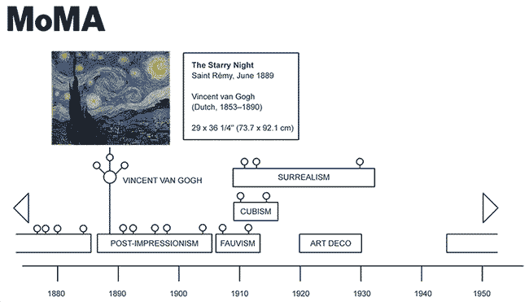

Use the timeline below to launch your exploration of the Museum of Modern Art's collection.
About This Project
This interactive was made for the
DATA73200: Interactive Data Visualization course by instructor Eleanor Frymire (
bio|
site), part of the
CUNY Graduate Center's M.S. in Data Analysis and Visualization program (
link).
Originally, the proposed scope aimed to provide an intuitive, browser-based "genre sampler" of 25 art movements from the 1700s to today. Focusing on mostly Western-centric painting and poster art, the project utilizes The Museum of Modern Art's diverse works as examples. By filtering, tagging, and visualizing MoMA's datasets (
Github link), it was meant as a working mockup to show students, art enthusiasts, and potential NYC tourists how modern styles evolved and influenced successive art movements in order to provide historical context and understanding of Western artistic shifts seen across MoMA's galleries.

initial wireframe, April 2024 | expand
In the early days of Macromedia Flash, I created "virtual player trading cards" for the Milwaukee Brewers and Bucks, allowing users to browse line-ups with player photos and stats. Before that, I wrote an academic piece comparing the transgressive nature of Post-Impressionism (Vincent van Gogh) and Pop Art (Andy Warhol), highlighting their different motivations.
From these concepts, the idea was collaborated on with classmates toward three feature goals:
- "Trading cards" on various pieces (artwork on front, gallery card info on back - here just shown as a gallery card).
- Time slider with "pop-ups" of key works per period.
- Gantt chart-ish visualization of overlapping art movement periods.
After looking at the MoMA dataset, the range of art movement genres and span of time was simplified to a more manageable dozen-of-the-century. Using a few online art history sources (
Google's Art & Culture section,
WikiArt, and of course,
MoMA.org), a mix of data cleaning via Python and manual tagging via Excel, the original dataset of 150,890 listed artworks was pared down to about 6,700 pieces....
Number of MoMA Pieces by Genre
363 ... Abstract Expressionism
212 ... Art Nouveau
895 ... Conceptual Art
1507 ... Cubism
558 ... Dadaism
825 ... Expressionism
458 ... Fauvism
30 ... Impressionism
412 ... Minimalism
1043 ... Pop Art
85 ... Post-Impressionism
376 ... Surrealism
Finally, artists most representative of their genres (van Gogh for Post-Impressionism, Andre Derain for Fauvism, Warhol and Roy Lichtenstein for Pop Art) were used to narrow further to 12 artworks per genre. The original visualization tried to showcase everything in one SVG, but
huge thanks to Prof. Frymire's feedback reminding me D3.js could just as easily manipulate the rest of a webpage's DOM - a lifesaver to finish the design.
^ BACK TO TOP